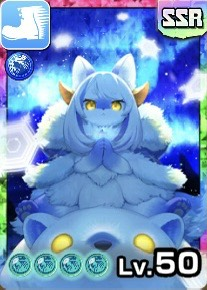

セリアン

セリアン
青オーラ
無機
主血統イルミネ
副血統ライガー
評価解説
- 2025年9月の2.5周年超スタフェスにて実装。恒常排出モンスター。
- 涼しげな水色カラーで獣のモフモフ感とイルミネ種の独特な妖艶さが合わさり、ヴィジュアル面でも評価の高いモンスター。
- 元来より人気のある信頼と実績のサブ血統ライガーとの掛け合わせ。セイランで味をしめていたのか、アニバーサリーというここぞの場面で当時の環境キャラであるイルミネベースのケモキャラを新たに生み出すという、運営の商才を感じさせる逸品キャラ。
- 図鑑説明によるとライガーの血のおかげで主人にとても忠実だが、セイランとは非常に仲が悪いとの事。無駄に想像力を掻き立てる関係性の設定に一部層も大喜びだろう。
- ガッツ回復A、移動速度B。「無機の律」持ちで青オーラのイルミネ種とあって、バトルのポテンシャルは非常に高い。
- だが地形と間合い適性は正直イマイチで、近距離Bは偉いが、遠距離Eスタートなのは技習得面でもボトルネック。モン類無機は距離適性がバトル性能にそのまま直結するので、秘伝伝授で予めカバーしておきたいところ。
- 固有技として初期から覚えている近距離ランク2青技「シールドバッシュ・氷」と、零距離ランク3青技「アサシンクロウ・氷」があり、技性能も技効果のバフもオリジナルより若干強めにはなっているが進んで使う程でもない。
- 登録可能な零距離ランク5青技「ミラージュクロウ」は、ガッツ消費は重いが優秀な技で主力として申し分ない。「楔」状態の相手には連撃+1に。
- イルミネ種特有の「プラズマ」を起点とした戦い方に関して言うと、正直意識し過ぎなくても良い。遠距離ランク4白技「アルスマグナ」はバフ目的で撃つ価値はあるが、もしランク5赤技の「クリムゾンノヴァ」があればそちらにガッツを回した方が良い。
- またイルミネ種のもう一つの特徴として全ての技に細かな自己バフがあり、技構成が悩ましくなる所だが、低ランク技の採用は消費ガッツの低さから連発に走って負け筋になるのでよく考えて選びたい。「アサシンクロウ・氷」はデバフ「楔」の為にも入れておく価値はあるが、出来れば「ミラージュクロウ」を中心に零距離は戦いたい。
- そういう意味だと遠距離ランク2青技「エーテルアイス」はバフデバフ目的のみならず、ガッツダウンBで自身間合いを遠→零にもってこれるので、セリアンには真面目に採用候補技の一つ。
- MRリムル「俺は喰らう者だ」によるバトルの恩恵は強烈で、モン類無機としてMRリッピーやMRギフトンの能力、MRクリス「無垢な寝顔」等があれば攻守共に固い。
- またロード秘伝によってSSRリムル「智慧之王」や、SSRシャルティア「蹂躙を開始しんす」、MRリュージン「リュージンチェイサー」等の強力なスキルを外から持ってこれると一線級の強さとなるだろう。
おすすめ編成
おすすめ編成①

リッピー

サフィルス

リムル・リゾート

クリス

シエナ
レンタル

ギフトン
おすすめ編成2
クリス
シエナ

ノルン
リムル・リゾート
リッピー
レンタル
ギフトン
イルミネ種の技
技は血統ごとに共通です。イルミネ種が覚える技の一覧は血統ページにまとめています。